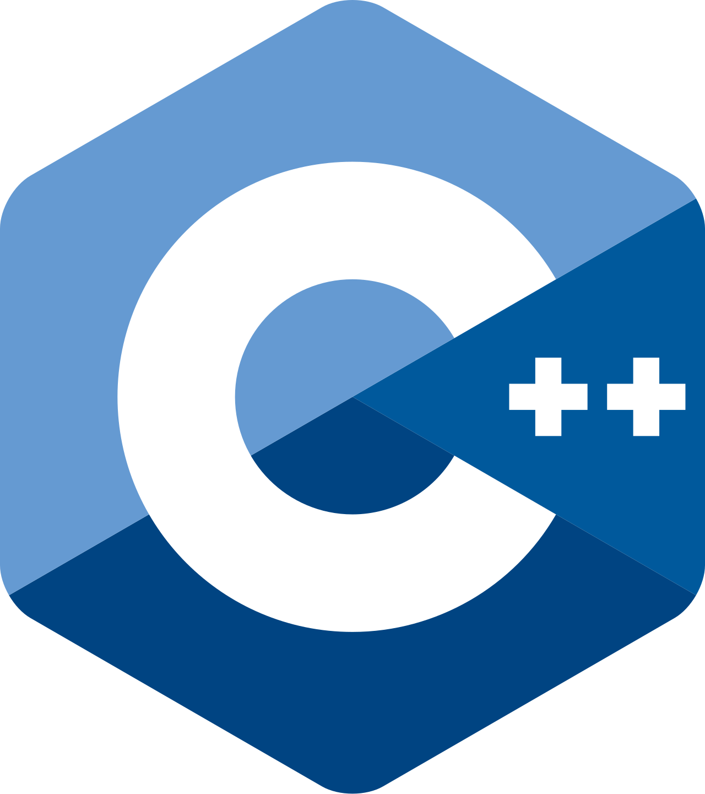

My Skills

HTML
Building structured, semantic web pages.
Proficiency: ★★★★☆

Python
Automating tasks, analyzing data, and building scripts for cybersecurity and beyond.
Proficiency: ★★★☆☆

C++
Developing efficient, high‑performance applications with object‑oriented design.
Proficiency: ★★★★☆

Java
Creating robust, cross‑platform applications for enterprise and mobile environments.
Proficiency: ★★★☆☆
CSS
Creating robust, cross‑platform applications for enterprise and mobile environments.
Proficiency: ★★★☆☆


 Email Me @ Gmail
Email Me @ Gmail Add Me On Facebook
Add Me On Facebook Follow Me On Instagram
Follow Me On Instagram